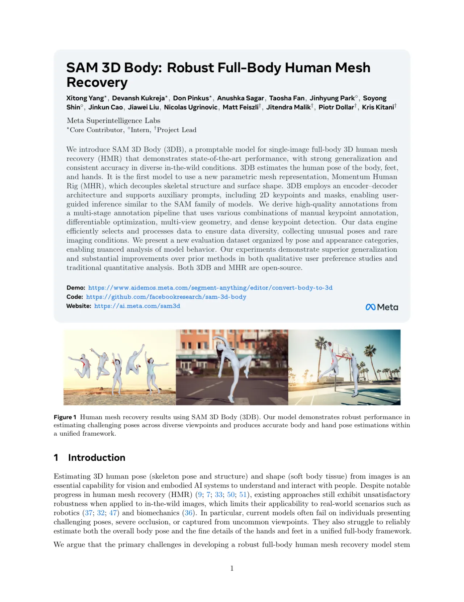
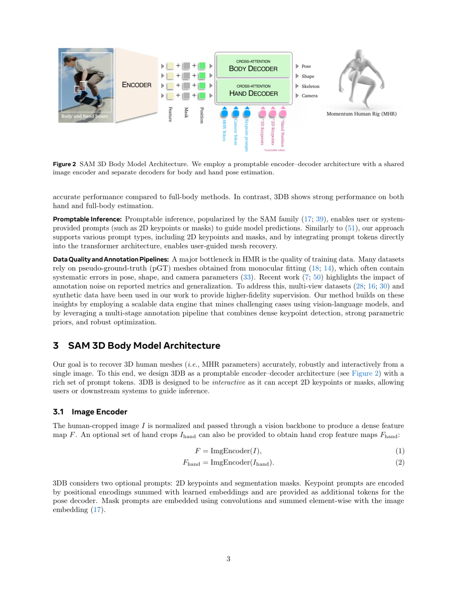
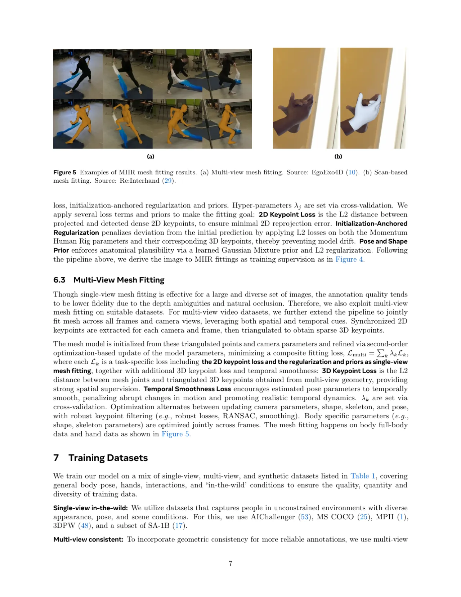
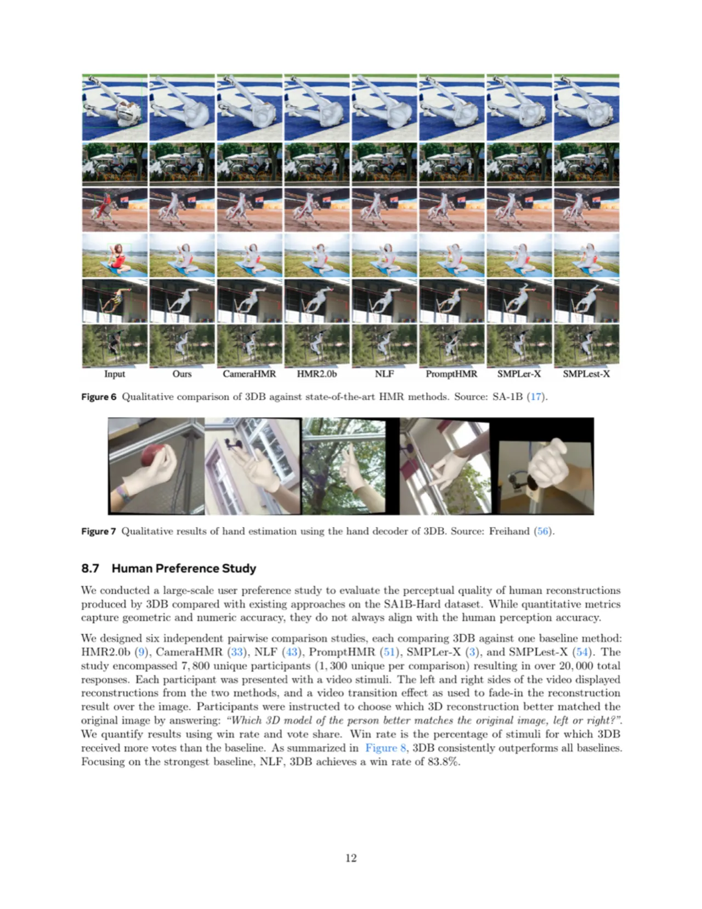
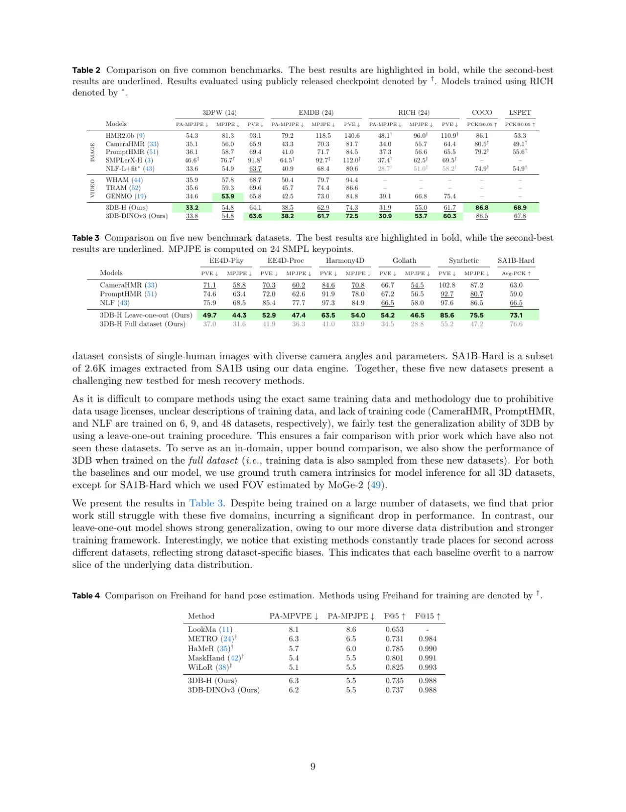

SAM 3D Body（3DB）是一个可提示的单图像全身三维人体网格恢复模型，首次使用 Momentum Human Rig（MHR）参数化表示，将骨骼结构与体表形状解耦。结合大规模高质量数据引擎与编码器-解码器架构，在复杂姿态、多样视角下实现业界最优的稳健性能。
从单张图像估计三维人体姿态与形状，对机器人、生物力学等真实世界应用至关重要。然而，现有方法在复杂姿态、严重遮挡或非常规视角下表现不稳定，且难以在统一框架中精确估计身体、手部和脚部。
"existing approaches still exhibit unsatisfactory robustness when applied to in-the-wild images, which limits their applicability to real-world scenarios such as robotics and biomechanics. In particular, current models often fail on individuals presenting challenging poses, severe occlusion, or captured from uncommon viewpoints. They also struggle to reliably estimate both the overall body pose and the fine details of the hands and feet in a unified full-body framework."

3DB 采用可提示的编码器-解码器架构：共享图像编码器负责提取特征，独立的身体解码器与手部解码器分别估计姿态参数，并基于全新的 Momentum Human Rig（MHR）参数化表示输出高保真全身网格。

Momentum Human Rig（MHR）是 ATLAS 的增强版，显式解耦骨骼结构与体表形状，提供更丰富的可控性和可解释性。相比 SMPL 系列将两者混杂于形状空间，MHR 能更直观地映射至骨骼长度等物理参数。
受 SAM 家族启发，3DB 支持多种可选提示：2D 关键点提示通过位置编码叠加至学习 embedding 后作为额外 token 输入姿态解码器；掩码提示经卷积编码后与图像 embedding 逐元素相加。提示机制在训练阶段作为交互式引导，天然助力模糊场景下的姿态估计。
3DB 的核心创新之一是两路解码器（Two-way Decoder）设计。Body Decoder 负责全身姿态，Hand Decoder 专注手部局部细节（输入可包含手部裁剪图），有效缓解了身体与手部在输入分辨率、相机估计和监督目标上的冲突优化问题。

在五大标准基准（3DPW, EMDB, RICH, COCO, LSPET）以及五个全新数据集上与业界最优方法（HMR2.0b, CameraHMR, PromptHMR, SMPLer-X, NLF, SMPLest-X 等）进行全面对比，报告 MPJPE、PA-MPJPE、PVE 及 PCK 等标准指标。
| 方法 | 3DPW PA-MPJPE↓ | 3DPW MPJPE↓ | EMDB PA-MPJPE↓ | EMDB MPJPE↓ |
|---|---|---|---|---|
| HMR2.0b | 54.3 | 81.3 | 79.2 | 118.5 |
| CameraHMR | 35.1 | 56.0 | 43.3 | 70.3 |
| PromptHMR | 36.1 | 58.7 | 41.0 | 71.7 |
| NLF-L+fit* | 33.6 | 54.9 | 40.9 | 68.4 |
| 3DB-H（Ours） | 33.2 | 54.8 | 38.5 | 62.9 |
| 3DB-DINOv3（Ours） | 33.8 | 54.8 | 38.2 | 61.7 |
* NLF 使用 RICH 数据训练；3DB 未使用 RICH。粗体为最优，下划线为次优。
| 方法 | EE4D-Phy PVE↓ | Harmony4D PVE↓ | Goliath PVE↓ | SA1B-Hard PVE↓ |
|---|---|---|---|---|
| CameraHMR | 71.1 | 84.6 | 66.7 | 102.8 |
| PromptHMR | 74.6 | 91.9 | 67.2 | 92.7 |
| NLF | 75.9 | 97.3 | 66.5 | 97.6 |
| 3DB-H Leave-one-out（Ours） | 49.7 | 63.5 | 54.2 | 85.6 |
| 3DB-H Full dataset（Ours） | 37.0 | 41.0 | 34.5 | 55.2 |
| 方法 | PA-MPVPE↓ | PA-MPJPE↓ | F@5↑ | F@15↑ |
|---|---|---|---|---|
| WiLoR†（手部专用） | 5.1 | 5.5 | 0.825 | 0.993 |
| 3DB-H（Ours，全身模型） | 6.3 | 5.5 | 0.735 | 0.988 |
| 3DB-DINOv3（Ours） | 6.2 | 5.5 | 0.737 | 0.988 |
† 使用 FreiHand 数据集训练的手部专用方法。3DB 作为全身模型与手部专用模型性能相当。


论文通过多视图网格拟合与单视图拟合的对比、有无提示输入的对比、以及 Leave-one-out 与全数据集训练的对比，验证了数据引擎、MHR 表示、双解码器设计与可提示架构各自对最终性能的贡献。3DB 在"非常困难"（very hard）姿态类别、severe truncation 及 top-down viewpoint 等挑战性场景下的优势尤为明显。
3DB 在 RICH 数据集上的表现略逊于 NLF（NLF 在 RICH 上的 PA-MPJPE 为 28.7，3DB-H 为 31.9），原因是 NLF 将 RICH 纳入训练数据，而 3DB 未使用该数据集。这体现了训练数据覆盖范围对域内评估指标的直接影响。
在 FreiHand 手部估计基准上，3DB 的 PA-MPVPE 为 6.3（DINOv3 版为 6.2），而手部专用模型 WiLoR 为 5.1。论文明确指出 3DB 是全身模型，在手部精度上与顶级手部专用方法仍有差距，但已达到"与手部专用方法相当（comparable）"的水平。
数据引擎的高质量标注依赖多视图采集系统（100+ 摄像头）和合成数据，这些资源在部署时难以大规模扩展至任意野外场景。单视图网格拟合"由于深度歧义和自然遮挡，标注质量往往较低"（论文原文），限制了纯依赖野外图像的标注质量上限。
3DB 估计身体、脚部和手部，但不包含面部（FLAME）表情估计。相比 SMPL-X 系列的完整面部参数化，面部表情的整合留待未来工作。
3DB 为单帧模型，不利用视频时序信息。视频方法（WHAM、TRAM、GENMO）在部分指标上具有优势（如 GENMO 在 EMDB 上的 PA-MPJPE 为 39.1，3DB-H 为 31.9，3DB 已优于视频方法；但视频方法在时序平滑性上有天然优势）。